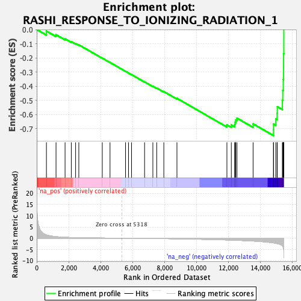
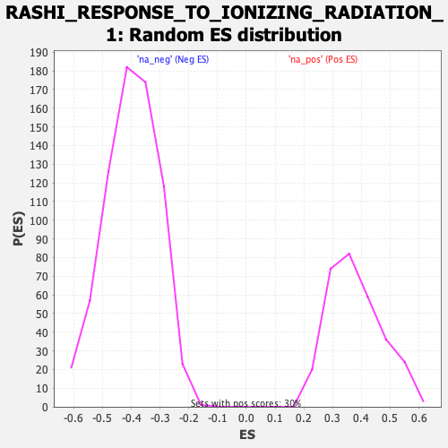

| | | Dataset | DE_genes |
| Phenotype | NoPhenotypeAvailable |
| Upregulated in class | na_neg |
| GeneSet | RASHI_RESPONSE_TO_IONIZING_RADIATION_1 |
| Enrichment Score (ES) | -0.74789226 |
| Normalized Enrichment Score (NES) | -1.874918 |
| Nominal p-value | 0.0 |
| FDR q-value | 0.0032187232 |
| FWER p-Value | 0.01 |
Table: GSEA Results Summary

Fig 1: Enrichment plot: RASHI_RESPONSE_TO_IONIZING_RADIATION_1
Profile of the Running ES Score & Positions of GeneSet Members on the Rank Ordered List
| PROBE | GENE SYMBOL | GENE_TITLE | RANK IN GENE LIST | RANK METRIC SCORE | RUNNING ES | CORE ENRICHMENT | | 1 | CDK4 | | | 608 | 1.451 | -0.0111 | No |
| 2 | G0S2 | | | 1209 | 0.673 | -0.0368 | No |
| 3 | FOXQ1 | | | 1775 | 0.399 | -0.0656 | No |
| 4 | HSD11B1 | | | 2165 | 0.276 | -0.0855 | No |
| 5 | WWP2 | | | 2435 | 0.219 | -0.0986 | No |
| 6 | ADRB2 | | | 2636 | 0.184 | -0.1080 | No |
| 7 | CWC15 | | | 4104 | 0.064 | -0.2018 | No |
| 8 | S100A1 | | | 4589 | 0.037 | -0.2324 | No |
| 9 | SLC23A3 | | | 5561 | -0.013 | -0.2950 | No |
| 10 | LIN9 | | | 5748 | -0.023 | -0.3066 | No |
| 11 | ZFP36 | | | 5936 | -0.035 | -0.3181 | No |
| 12 | WNT4 | | | 6753 | -0.092 | -0.3691 | No |
| 13 | CCT3 | | | 7272 | -0.134 | -0.4001 | No |
| 14 | TIMM8A | | | 7512 | -0.153 | -0.4126 | No |
| 15 | COL15A1 | | | 7957 | -0.194 | -0.4376 | No |
| 16 | PAFAH1B2 | | | 8780 | -0.283 | -0.4853 | No |
| 17 | ATF3 | | | 11908 | -0.787 | -0.6725 | No |
| 18 | ZAP70 | | | 12183 | -0.852 | -0.6736 | No |
| 19 | SEC23A | | | 12395 | -0.902 | -0.6697 | No |
| 20 | SLBP | | | 12420 | -0.909 | -0.6535 | No |
| 21 | SLC2A1 | | | 12463 | -0.919 | -0.6383 | No |
| 22 | VEGFA | | | 12537 | -0.937 | -0.6248 | No |
| 23 | DNAJC17 | | | 13547 | -1.274 | -0.6653 | No |
| 24 | SGK1 | | | 14823 | -2.084 | -0.7073 | Yes |
| 25 | IER3 | | | 14825 | -2.088 | -0.6666 | Yes |
| 26 | DUSP1 | | | 14967 | -2.266 | -0.6315 | Yes |
| 27 | GADD45A | | | 15049 | -2.381 | -0.5904 | Yes |
| 28 | SERPINB6 | | | 15062 | -2.399 | -0.5444 | Yes |
| 29 | WDR74 | | | 15380 | -3.419 | -0.4982 | Yes |
| 30 | IER2 | | | 15405 | -3.617 | -0.4292 | Yes |
| 31 | EGR1 | | | 15434 | -4.010 | -0.3529 | Yes |
| 32 | JUN | | | 15456 | -4.705 | -0.2625 | Yes |
| 33 | PLXNA2 | | | 15457 | -4.731 | -0.1702 | Yes |
| 34 | FOS | | | 15471 | -8.771 | -0.0000 | Yes |
Table: GSEA details [plain text format]

Fig 2: RASHI_RESPONSE_TO_IONIZING_RADIATION_1: Random ES distribution
Gene set null distribution of ES for RASHI_RESPONSE_TO_IONIZING_RADIATION_1